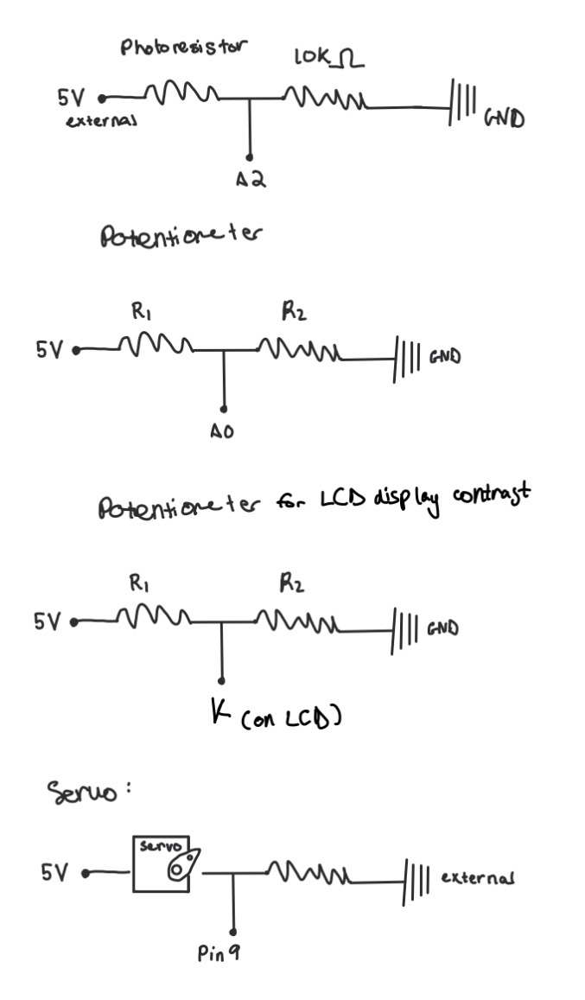
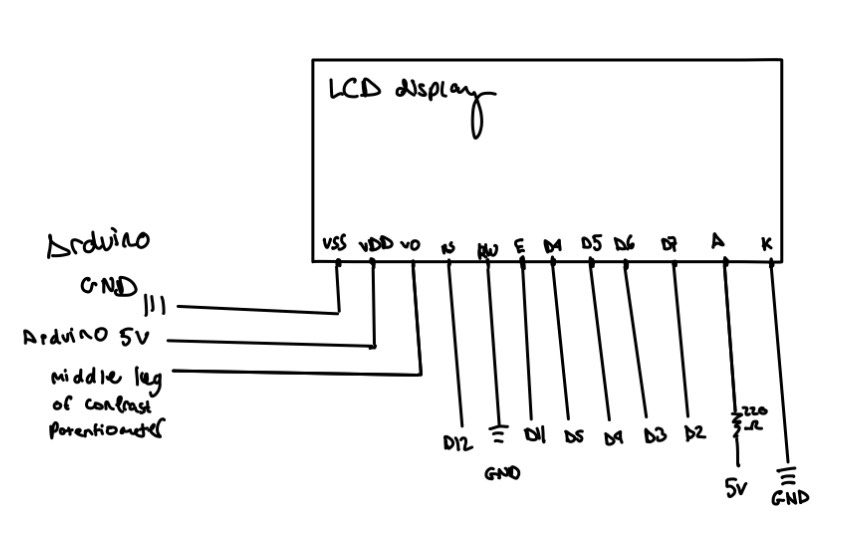
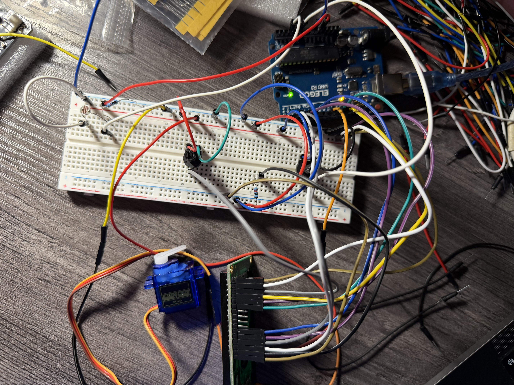

Here is all the documentation for assignment 4!
Here is all the documentation for assignment 4!
Schematic:


The schematic uses voltage dividers for both the photoresistor and potentiometer
to convert changes in resistance into measurable analog voltages (0–5V) for the Arduino’s analog pins (A2 and A0).
A 10kΩ resistor was chosen for the photoresistor divider because it provides a balanced response
within typical indoor light range. The servo motor is connected to digital pin 9 and is powered from 5V and GND.
The LCD uses a 220Ω resistor to limit current and prevent damage.
Circuit:

I built my circuit like this to ensure that the wiring was organized desipte the large amount of wiring.
Ohm's Law Calculations


I noted that 1k Ohms is for bright light, and 100k Ohms is for dark, which I used to calculate the resistor needed for my photoresistor.
likewise, I used 0.013 amps as a safe operating current for my LCD.
Additionally, my calculations showed a 220 resistor would be the safest option for my LCD.
Firmware:
/*
Valentina Filizola
Libraries! Assignment
HCDE 439
*/
// Include the servo library (library #1). (periods on libraries to display in example code)
#include <.Servo.h>
// Include the LCD library (library #2).
#include <.LiquidCrystal.h>
// Create a Servo object to control the servo motor.
Servo myServo;
// Create an LCD object using RS=12, E=11, D4=5, D5=4, D6=3, D7=2.
LiquidCrystal lcd(12, 11, 5, 4, 3, 2);
// Set the servo signal pin.
const int servoPin = 9;
// Set the potentiometer analog input pin (controls behavior).
const int potPin = A0;
// Set the photoresistor divider analog input pin.
const int photoPin = A2;
// Set minimum servo angle.
const int minAngle = 5;
// Set maximum servo angle.
const int maxAngle = 175;
// Track the current servo angle.
int angle = minAngle;
// Track direction of motion (+1 forward, -1 backward).
int stepDir = 1;
// Store calibrated minimum light ADC reading.
int lightMin = 1023;
// Store calibrated maximum light ADC reading.
int lightMax = 0;
// Store calibrated midpoint light value.
int lightCenter = 512;
// Store the last “good” light reading for outlier rejection.
int lastLight = 0;
// Store an exponentially smoothed light value.
float lightEMA = 0.0;
// Set EMA smoothing factor.
const float alpha = 0.15;
// Store a simple “mode” for interaction using only the pot.
int mode = 1;
// Calibrate the photoresistor by sampling a short window.
void calibratePhotoresistor() {
// Reset min value.
lightMin = 1023;
// Reset max value.
lightMax = 0;
// Save the start time of calibration.
unsigned long startMs = millis();
// Sample for about 2 seconds
while (millis() - startMs < 2000) {
// Read raw photoresistor ADC value.
int v = analogRead(photoPin);
// Update minimum observed value.
if (v < lightMin) lightMin = v;
// Update maximum observed value.
if (v > lightMax) lightMax = v;
// Small delay to reduce spam and stabilize sampling.
delay(5);
}
// If calibration range is too small, expand it slightly for safety.
if (lightMax - lightMin < 20) {
// Pull min down a bit but not below 0.
lightMin = max(0, lightMin - 10);
// Push max up a bit but not above 1023.
lightMax = min(1023, lightMax + 10);
}
// Compute center as midpoint of min/max.
lightCenter = (lightMin + lightMax) / 2;
// Initialize lastLight to the center to avoid startup spikes.
lastLight = lightCenter;
// Initialize EMA state to the center for stable filtering.
lightEMA = (float)lightCenter;
}
void setup() {
// Start Serial for debugging and documentation.
Serial.begin(9600);
// Attach the servo to its signal pin.
myServo.attach(servoPin);
// Initialize the LCD as 16 columns by 2 rows.
lcd.begin(16, 2);
// Print a startup message on the LCD.
lcd.print("Calibrating...");
// Calibrate the photoresistor (rubric requirement for analogRead usage).
calibratePhotoresistor();
// Clear the LCD after calibration.
lcd.clear();
// Prints a label for the minimum light value.
Serial.print("Calibrated lightMin=");
// Prints the calibrated minimum light reading.
Serial.print(lightMin);
// Prints a label for the maximum light value.
Serial.print(" lightMax=");
// Prints the calibrated maximum light reading.
Serial.print(lightMax);
// Prints a label for the center light value.
Serial.print(" lightCenter=");
// Prints the calibrated center light reading and ends the line.
Serial.println(lightCenter);
}
void loop() {
// Read the potentiometer
int potValue = analogRead(potPin);
// Read the photoresistor raw value.
int rawLight = analogRead(photoPin);
// // Detects readings far outside the expected calibrated range.
if (rawLight < lightMin - 50 || rawLight > lightMax + 50) {
// Uses the last trusted reading instead of the outlier spike.
rawLight = lastLight;
}
// Save the last good reading for next time.
lastLight = rawLight;
// Smooths the light reading to reduce random noise.
lightEMA = alpha * (float)rawLight + (1.0 - alpha) * lightEMA;
// Convert filtered value to integer ADC units.
int lightValue = (int)lightEMA;
// Use pot to choose a “mode” (low pot = mode 0, high pot = mode 1).
mode = (potValue < 512) ? 0 : 1;
// Map pot into a sensitivity span for the light window.
int span = map(potValue, 0, 1023, 80, 700);
// Compute low bound around calibrated center.
int low = lightCenter - span / 2;
// Compute high bound around calibrated center.
int high = lightCenter + span / 2;
// Clamp low bound to ADC range.
low = constrain(low, 0, 1023);
// Clamp high bound to ADC range.
high = constrain(high, 0, 1023);
// Limits the filtered light value into the measured “dark-to-bright” range.
int clamped = constrain(lightValue, 602, 844);
// Converts light level into a delay (dark -> slow, bright -> fast).
int moveDelay = map(clamped, 602, 844, 400, 5);
// Ensures delay stays within a safe/usable range.
moveDelay = constrain(moveDelay, 5, 400);
// Map pot to step size
int stepSize = map(potValue, 0, 1023, 1, 10);
// Constrain step size to safe range.
stepSize = constrain(stepSize, 1, 10);
// If mode 1, only sweep when it is darker than the center, if in mode 1 and it’s brighter than the calibrated midpoint, pause motion.
if (mode == 1 && lightValue > lightCenter) {
// Hold position by writing the current angle.
myServo.write(angle);
// Moves the LCD cursor to the first row, first column.
lcd.setCursor(0, 0);
// Prints a message indicating the servo is holding position.
lcd.print("Mode1: HOLD ");
// Moves the LCD cursor to the second row, first column.
lcd.setCursor(0, 1);
// Prints the label for the light value.
lcd.print("L=");
// Prints the current filtered light reading.
lcd.print(lightValue);
// Prints the label for the calibrated center value.
lcd.print(" C=");
// Prints the calibrated center light reading for comparison.
lcd.print(lightCenter);
// Short delay to reduce flicker and spam.
delay(50);
// Stops this loop iteration so the servo does not sweep while holding.
return;
}
// Update angle by direction and step size.
angle += stepDir * stepSize;
// Reverse direction at maximum angle.
if (angle >= maxAngle) {
// Clamp to max angle.
angle = maxAngle;
// Reverse direction.
stepDir = -1;
}
// Reverse direction at minimum angle.
else if (angle <= minAngle) {
// Clamp to min angle.
angle = minAngle;
// Reverse direction.
stepDir = 1;
}
// Send the new angle command to the servo.
myServo.write(angle);
// Prints a label for the pot reading.
Serial.print("Pot=");
// Prints the current pot value.
Serial.print(potValue);
// Prints a label for the raw light reading.
Serial.print(" Light(raw)=");
// Prints the current raw light value.
Serial.print(rawLight);
// Prints a label for the filtered light reading.
Serial.print(" Light(filt)=");
// Prints the current filtered light value.
Serial.print(lightValue);
// Prints a label for the servo step size.
Serial.print(" Step=");
// Prints the current step size.
Serial.print(stepSize);
// Prints a label for the movement delay.
Serial.print(" Delay=");
// Prints the current delay value.
Serial.print(moveDelay);
// Prints a label for the current mode.
Serial.print(" Mode=");
// Prints the mode and ends the line.
Serial.println(mode);
// Sets cursor to the start of the first LCD row.
lcd.setCursor(0, 0);
// Prints the label for servo angle.
lcd.print("A=");
// Prints the current servo angle.
lcd.print(angle);
// Prints the label for delay (speed).
lcd.print(" D=");
// Prints the current movement delay value.
lcd.print(moveDelay);
// Prints extra spaces to overwrite leftover characters.
lcd.print(" ");
// Sets cursor to the start of the second LCD row.
lcd.setCursor(0, 1);
// Prints the label for light reading.
lcd.print("L=");
// Prints the filtered light value.
lcd.print(lightValue);
// Prints the label for mode.
lcd.print(" M=");
// Prints the current mode number.
lcd.print(mode);
// Prints extra spaces to overwrite leftover characters.
lcd.print(" ");
// Wait before next movement update.
delay(moveDelay);
}
Circuit's Operation
Additional questions:
1: Say you are using a servo motor you attach to pin 9. In your loop() you have the following code:
void loop() {
for (pos = 0; pos <= 180; pos += 1) {
myservo.write(pos);
delay(100);
}
}
Draw a graph with the x-axis as time and the y-axis as voltage at pin 9 with respect to ground.

2: Your input device is slightly broken, leading it to give us an erroneous reading 1% of the time. How can we address this? Answer in (pseudo)code.
READ value1 from sensor
READ value2 from sensor
READ value3 from sensor
SET value = median(value1, value2, value3)
RETURN value
3: Your input device is slightly noisy, leading the measurement to randomly deviate from the true measurement up or down by 10%. How can we address this? Answer in (pseudo)code.
SET sum = 0
FOR i from 1 to N
READ value from sensor
ADD value to sum
END FOR LOOP
SET averageValue = sum ÷ N
RETURN averageValue
I used ChatGPT as a debugging assistant to help identify logic issues and strengthen the reliability of my system.
Specifically, it helped me implement a proper calibration routine for the photoresistor and incorporate an
exponential moving average (lightEMA) to smooth noisy sensor readings. Instead of simply reacting to every raw value,
I learned how filtering and outlier rejection improve stability and prevent unintended servo movement caused by sudden spikes.